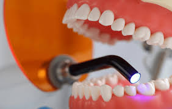
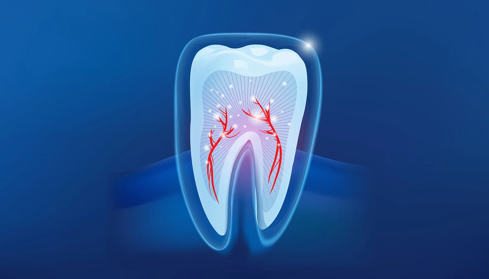
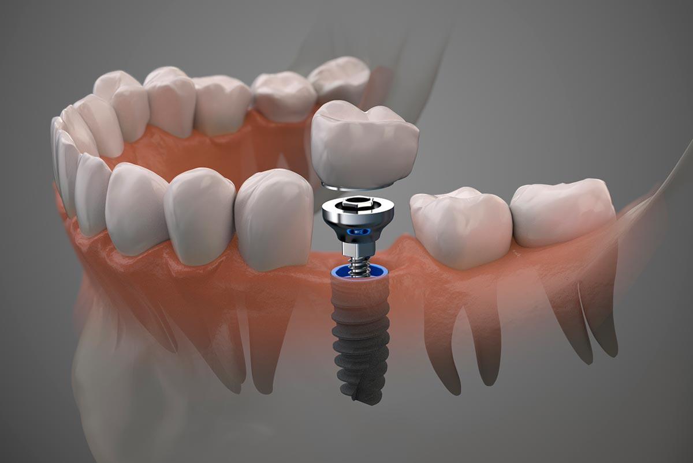
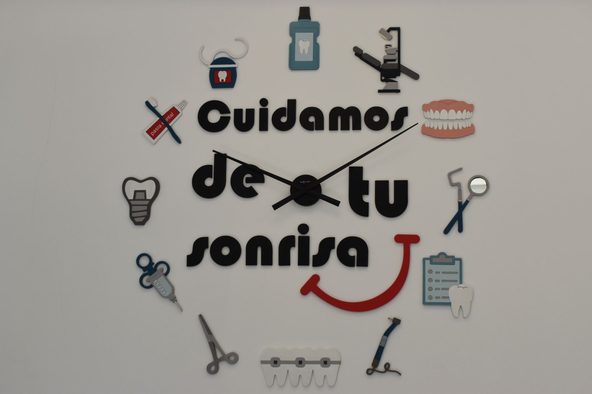

01
01Implantología
Implantes dentales, coronas y rehabilitaciones para recuperar piezas perdidas con seguridad y estética.
Más informaciónEn Clínica Dali Dent Parla ofrecemos tratamientos personalizados para cuidar tu salud bucodental, recuperar la funcionalidad y mejorar la estética de tu sonrisa con una atención cercana y profesional.
Cada sonrisa es diferente. Por eso valoramos tu caso de forma individual y te orientamos con claridad para encontrar el tratamiento más adecuado según tus necesidades, tu salud bucodental y tus objetivos estéticos.
01Implantes dentales, coronas y rehabilitaciones para recuperar piezas perdidas con seguridad y estética.
Más información 02
02Alineadores transparentes para corregir la sonrisa de forma cómoda, discreta y personalizada.
Más información 03
03Brackets para mejorar la mordida, alinear los dientes y conseguir una sonrisa más armónica.
Más información
04Tratamiento de encías, sangrado, inflamación y enfermedad periodontal para cuidar la salud bucal.
Más información 05
05Revisiones, limpiezas dentales, empastes, caries y prevención para mantener una boca sana.
Más información
06Tratamientos para conservar dientes dañados, aliviar molestias y evitar extracciones innecesarias.
Más información 07
07Tratamiento estético para conseguir una sonrisa más luminosa, cuidada y natural.
Más información 08
08Prótesis sobre implantes para recuperar funcionalidad, comodidad y estética en la sonrisa.
Más información
09Coronas, puentes y restauraciones fijas para devolver forma, resistencia y estética dental.
Más información 10
10Tratamientos estéticos para mejorar color, forma, proporción y armonía de la sonrisa.
Más información
11Férulas de descarga y soluciones para molestias mandibulares, desgaste dental y tensión muscular.
Más información 12
12Extracciones, cordales y otros procedimientos quirúrgicos dentales con atención profesional.
Más informaciónEscríbenos y te orientaremos de forma cercana para ayudarte a elegir la mejor solución para tu caso.
Sí. Antes de iniciar cualquier tratamiento se explica el diagnóstico, las opciones y el presupuesto personalizado.
Sí. Puedes solicitar una valoración y el equipo te orientará según tus síntomas, objetivos y salud bucodental.
Contacta por teléfono o WhatsApp para explicar tu caso. El equipo te indicará la disponibilidad y la forma de proceder.